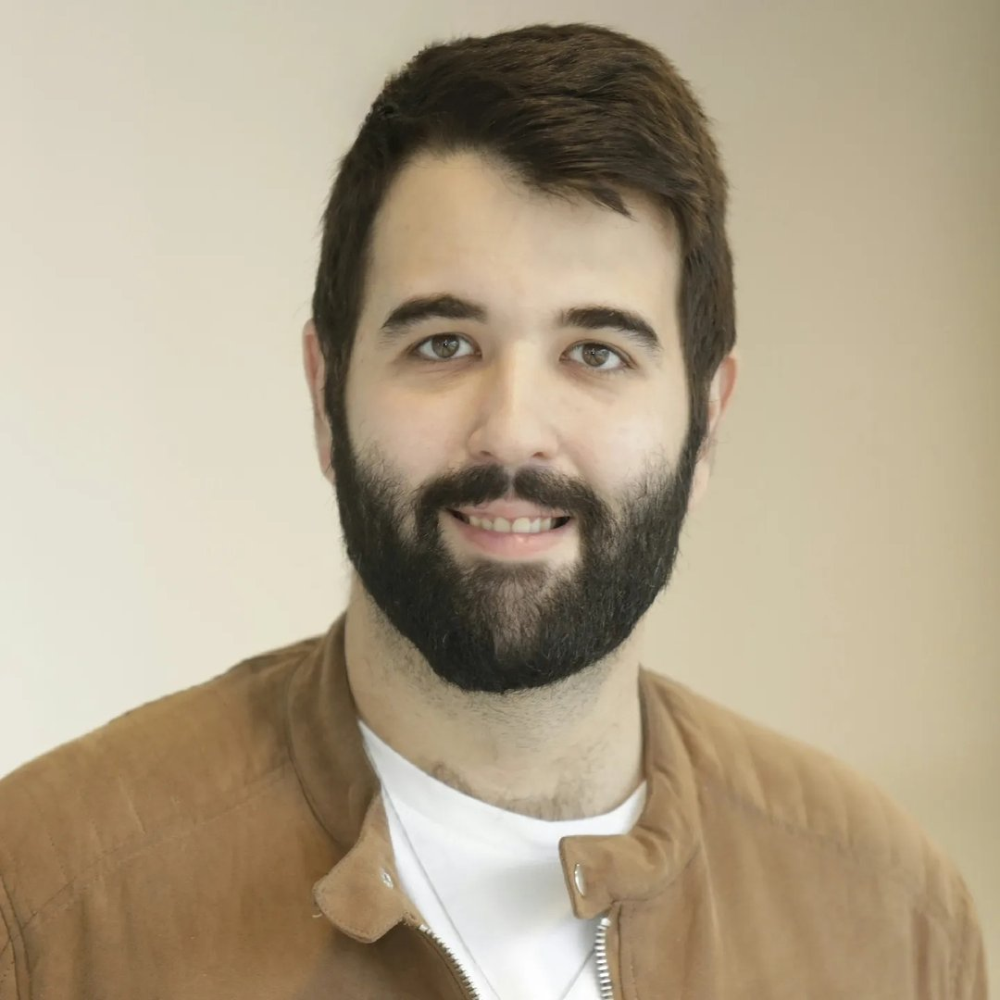
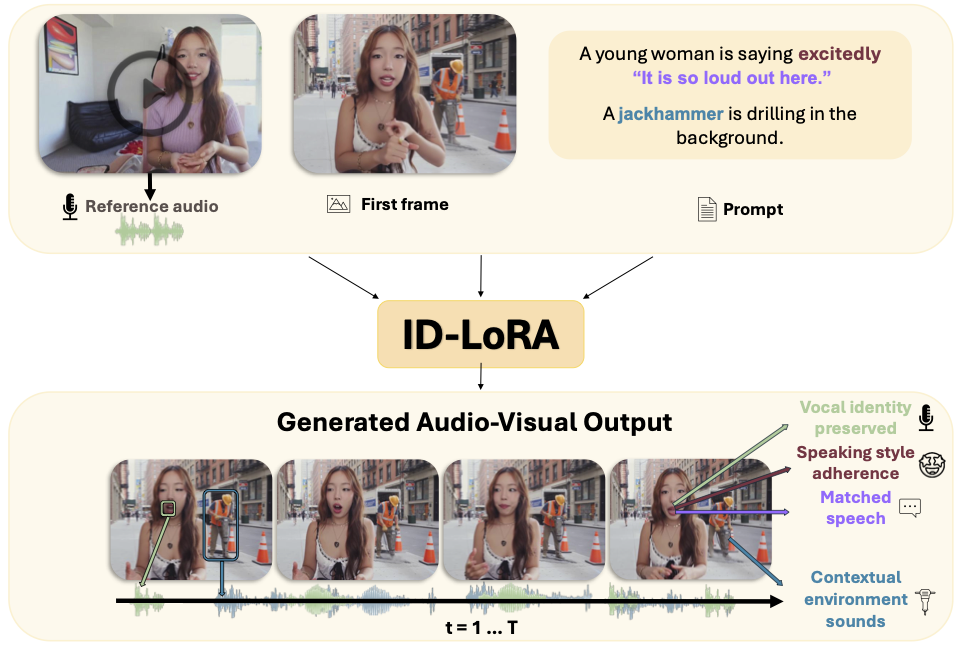
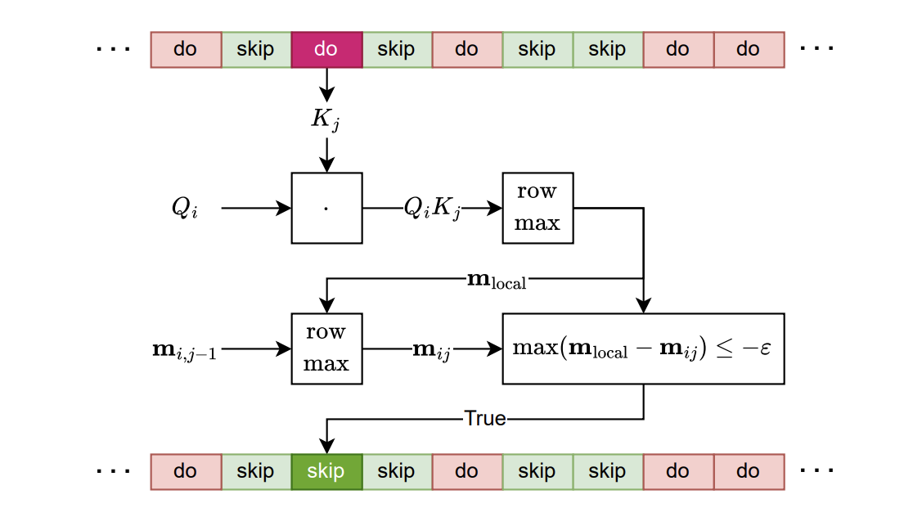
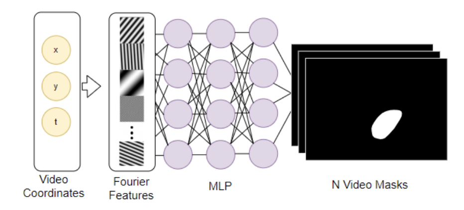

Aviad Dahan
PhD Student in Electrical Engineering
Tel Aviv University
I am a PhD student in Electrical Engineering at Tel Aviv University, working under the supervision of Prof. Raja Giryes and Prof. Lior Wolf.
My research focuses on deep learning for computer vision, with particular interests in:
- Image Editing - Generative models for image manipulation
- Video Editing - Temporal consistency in video generation
- Medical Image Segmentation - Adapting foundation models for medical imaging
- Speech & Audio - Audio-visual generation and personalization
Education
- PhD in Electrical Engineering, Tel Aviv University (2024 - Present)
- M.Sc. in Electrical Engineering (with honors), Tel Aviv University (2022 - 2024)
- M.Eng. in System Engineering, Technion (2017 - 2019)
- B.Sc. in Electrical Engineering, Technion (2009 - 2013)
Publications


